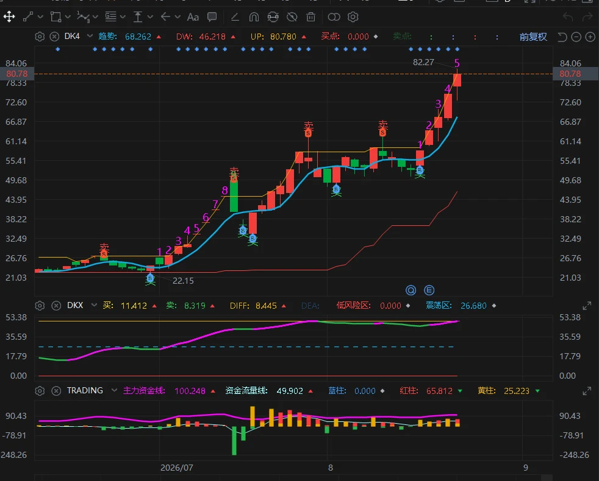
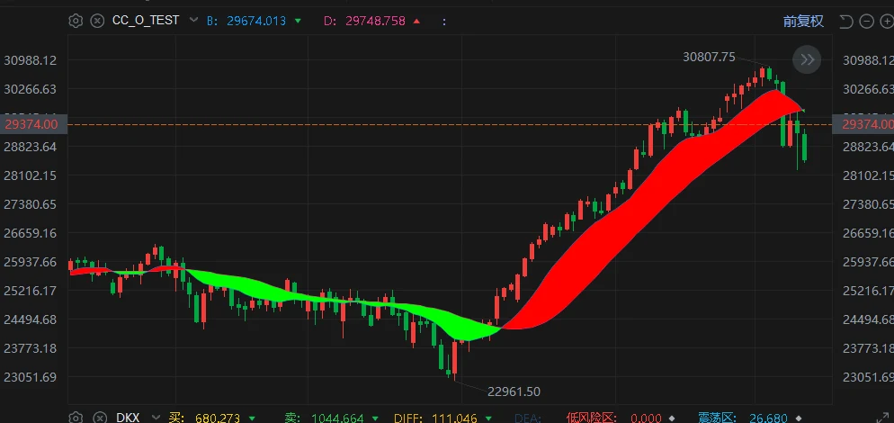
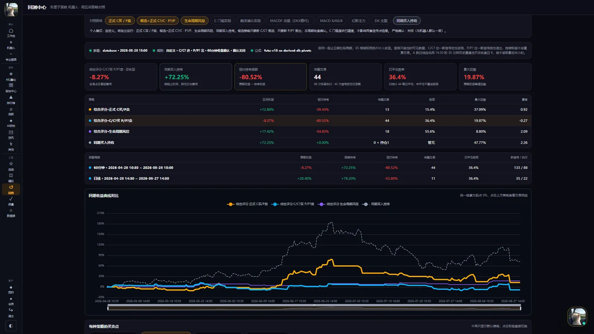

- DK · 买卖位置
- DKX · 趋势拐点
- O · 结构趋势带
- TRADING · 主力资金
CHERRY CAKE · RESEARCH ROBOT
让每一次判断有据可查 让每一次复盘都有来路
一条研究链，六个工作面
从“为什么值得看”，一路核对到“什么情况该停”。六个真实产品页面依次展开。
四指标体系
DK、DKX、O 与 TRADING 各自承担不同观察任务，沿着同一根 K 线展开。页面只整理证据，不替你做决定。

机器人模式
简化模式先把动作和风险说清，专业模式再还原依据。两个模式只改呈现，不改公式。
简化信号
选标的、选周期后，集中看买、卖、候选或等待。需要更多证据，再切换专业复盘。
受控流程
信号、风控、授权、执行是四道不同的门。当前只开放前两步的研究与人工确认。
自动下单：规划中 · 尚未开放 · 需券商授权、额度确认、风控与真实环境验收
对比版 · 自动播放（无需滚动 · 每张停留几秒自动翻 · 字先播完，图才滑上来）
策略中心 × 回测中心
策略选股组合条件，把研究想法落成确定性规则；回测中心在同一日期窗口比较信号模式、周期与同期持有。每一次买卖都能回到图表核验。
